從到家第一天
陪牠健康長大
香菇爸八年照護筆記 ~ 新手・腸道・腎臟・成分・貓語
點一下主題就會展開 👇
🏡新貓到家 7 天這樣做用愛與耐心 陪牠建立安全感›
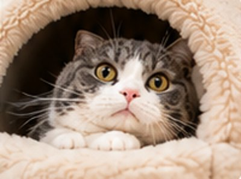
DAY 1先適應新環境›
- 準備安靜的獨立空間
- 放好貓砂、水、少量食物
- 讓牠自己探索 不強迫互動
❤ 先讓牠看你 不要抱 坐在附近做自己的事
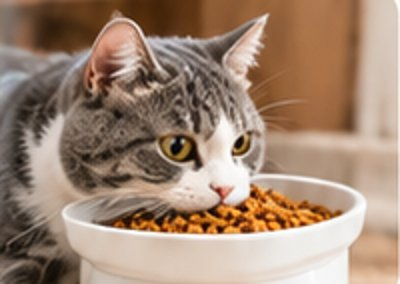
DAY 2建立吃飯喝水習慣›
- 少量多餐
- 確認有喝水
- 觀察食慾和便便
❤ 手指讓牠聞一聞 用食物建立好印象
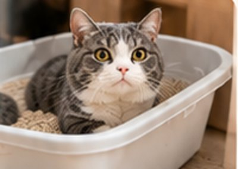
DAY 3保持環境乾淨›
- 每天清貓砂盆
- 水碗食碗保持乾淨
- 看便便的形狀、顏色、次數
❤ 用玩具吸引注意 讓牠主動靠近你
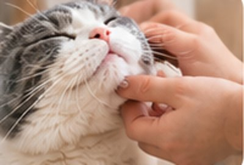
DAY 4開始建立信任›
- 觀察牠的身體語言
- 用溫柔的聲音說話
- 可以輕摸下巴、臉頰
❤ 牠放鬆了 再慢慢增加摸的時間
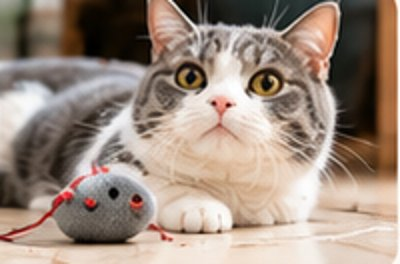
DAY 5增加日常互動›
- 每天固定遊戲時間
- 用逗貓棒或小玩具
- 觀察精神和食慾
❤ 玩完給一點小點心 讓牠覺得跟你在一起很開心
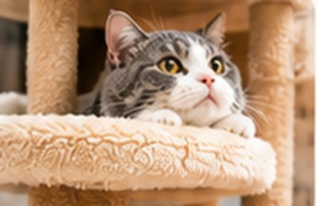
DAY 6觀察整體狀態›
- 食慾、精神、排便
- 有沒有嘔吐、流淚、掉毛
- 環境維持安靜舒適
❤ 延長互動時間 梳梳毛、輕輕按摩
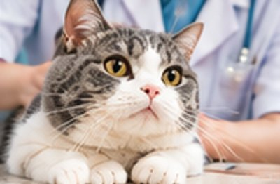
DAY 7安排健康檢查›
- 第一次健康檢查
- 理學檢查・血液檢測
- 了解身體狀況 提早預防
❤ 帶著這 7 天的觀察紀錄給醫生看
📋貓舍送貓前 一定要做的檢查不是只有可愛 也要健康才可以回家›
 🔍 點圖片可以放大
🔍 點圖片可以放大
不是只問「有沒有做」
日期、紀錄、檢測結果都要一起確認 ~ 拿不出紀錄的，就是要停下來想一想的訊號
點一下主題就會展開 👇
💩為什麼幼貓特別容易軟便？多數不是生病 是身體還在適應›
多數不是生病 是腸胃還在適應 ~ 常見 3 個原因
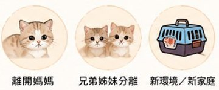
換環境壓力離開媽媽、到新家 腸胃也會緊張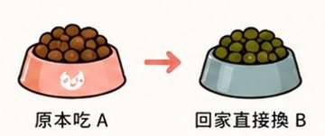
換食物太快一回家就直接換新飼料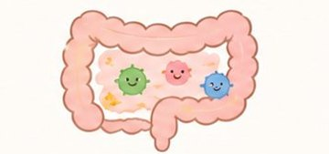
腸道還在發育幼貓的腸胃還在建立中便便長這樣 對照一下
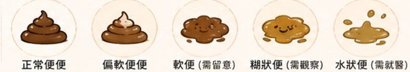
可以這樣幫牠
🍽️挑食 有時候是腸胃在說話不一定是任性›
點一下主題就會展開 👇
🥛牠一天該喝多少水？輸入體重 馬上算給你看›
🐟不愛喝水？騙喝水 12 招小改變大不同 每天多喝一口›
一次試 1～2 招就好 找到你家主子吃的那一招 😼

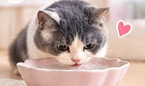
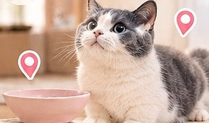
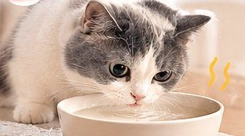
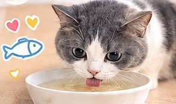


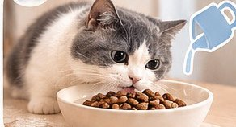
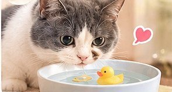


🫘腎臟為什麼要早點注意？貓很會忍 早期幾乎沒症狀›
腎臟是貓咪很常被提醒要注意的器官，早期通常看不出來，等到喝多尿多、變瘦才發現，往往已經不是剛開始了。
香菇爸的做法很簡單：年輕就把水顧好、定期健檢看數字，不是等出事才處理。
點一下主題就會展開 👇
🥫買罐罐前 先看這些 NG 成分增稠・凝膠・填充 常見的有哪些›
這些常用來 增稠・凝膠・填充

 關華豆膠增稠用 不用怕
關華豆膠增稠用 不用怕 黃原膠增稠用 不用怕
黃原膠增稠用 不用怕 澱粉類排很前面 就要比較
澱粉類排很前面 就要比較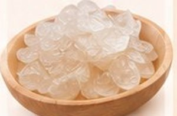
洋菜・寒天凝膠用 通常沒問題翻到成分表 看前 5 項
 ✓ 比較理想
✓ 比較理想- 雞肉
- 雞肝
- 雞心
- 雞脂肪
 ✕ 要多比較
✕ 要多比較- 雞肉
- 米
- 玉米蛋白粉
- 木薯粉
點一下主題就會展開 👇
🗣️10 種喵叫聲 牠在說什麼？主子不是亂叫 是有話要說›
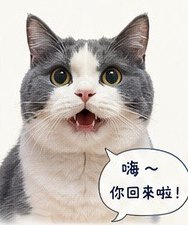
喵！
- 欸～你回來啦
- 我看到你了
- 奴才早安
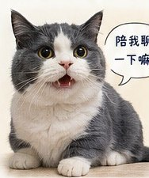
喵喵喵～
- 今天過得如何？
- 我有事想跟你說
- 陪我一下
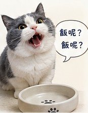
喵～～～～
- 飯呢？
- 我的飯呢？
- 我的飯到底呢？
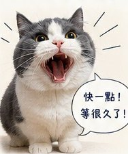
喵啊啊啊！
- 快一點！
- 本貓等很久了！
- 效率呢？
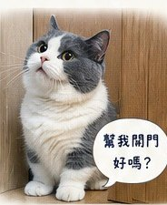
喵？
- 幫我開門
- 我要進去
- 我要出去
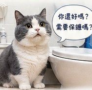
喵～
- 你還活著嗎？
- 需要保鑣嗎？
- 本喵巡邏一下
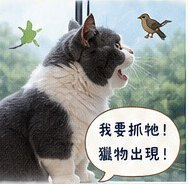
嘎嘎嘎嘎嘎
- 我要抓牠！
- 獵物出現！
- 快讓我出去！
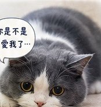
嗚嗚喵～
- 你是不是不愛我了
- 你今天摸太少
- 本貓有情緒了
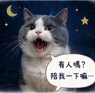
嗚喵～～～
- 有人嗎？
- 我很無聊
- 起床陪我
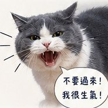
哈——！
- 不要過來
- 我不舒服
- 我現在很緊張
🎬 香菇的小劇場
喵喵喵喵喵！朕駕到 快打開！
喵～～～～上班時間到了！
喵？不要工作了 摸我！
每隻貓個性不同 叫聲也會有差異 ~ 多觀察、多陪伴 你會越來越懂你家主子 🐾
🖼️ 看整張海報（可以存起來）💬貓咪其實一直在跟你說話最常見的 12 個貓語行為›


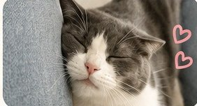

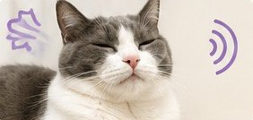


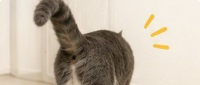

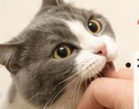
每隻貓個性不同 ~ 理解牠的行為 就是最好的愛與陪伴 ❤
🖼️ 看整張海報（可以存起來） 🔒 完整版
🔒 完整版加 LINE 就能看
📘 護貓手冊完整版
- 💩 便便 7 型對照＋什麼時候要就醫
- 🍽️ 換糧日曆＋挑食改善步驟
- 💧 讓貓多喝水的方法
- 🫘 不同年齡的健檢清單
- 🦴 骨骼關節發展
內容為香菇爸整理的日常照顧觀念，不是醫療建議
每隻貓狀況不同，有任何異常請先就醫・© 2026 香菇爸